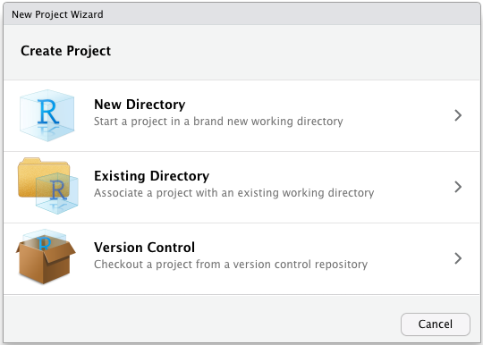
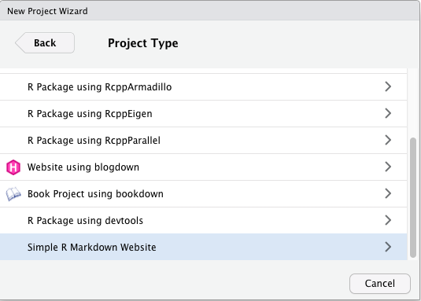
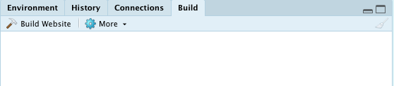
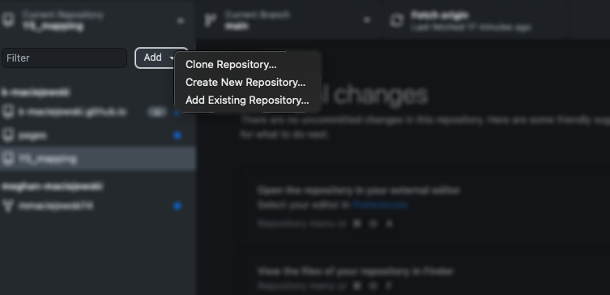
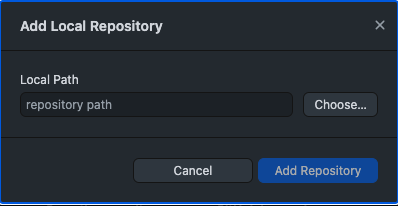
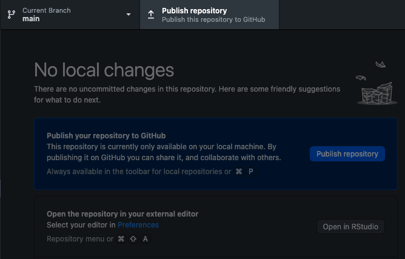
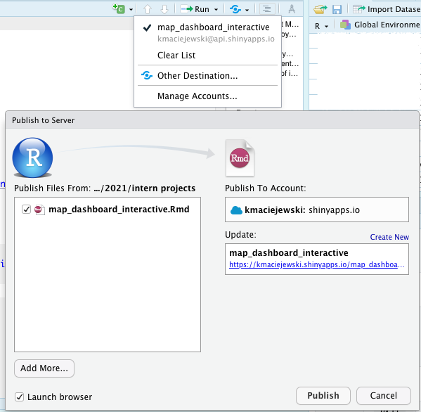

In addition to creating your project plots or dashboards on your local computer, you can also host online.
RMarkdown allows you to create simple websites. These pages are all created with .Rmd and .html files. You can also add simple themes.
Create a new project and choose a website. The default template creates the _site.yml, index, about, and projects files.


_site.yml: holds simple structure for navigating your website
For example the yml for this site is below. The text string is what shows in the navbar and the href is the document name or web address to navigate
name: "Young Scholars"
navbar:
title: "Young Scholars Mapping"
left:
- text: "About"
href: index.html
right:
- text: "tutorial materials"
menu:
- text: "1- Plotting Maps"
href: plotting_maps.html
- text: "2- Creating dashboards"
href: dashboard_101.html
- text: "3- Adding maps to your dashboard"
href: map_dashboard.html
- text: "4- Interactive dashboard"
href: https://kmaciejewski.shinyapps.io/map_dashboard_interactive/
- text: "Optional: host your project online"
href: host.htmlindex.Rmd: holds the text and any information or code for the “landing page” of your site
You can also use the “about” and “projects” pages, or delete them if not used. You can also create multiple pages, with other names. These can be created from .Rmd files, and should have html output.
In the Rmd YAML, add a title and theme to each page. You can browse themes here
---
title: "title"
output:
html_document:
theme: flatly
---You can knit your files as usual to render, preview the page or site, and Build the site to put it all together. Note that knitting the page only applies to that individual page. You should remember to hit Build to ensure all changes are applied to the whole site.

The RMarkdown Definitive Guide chapter on site generation has more details about additional options like footers, adding icons to the navbar, and more.
GitHub is a site used to host and share code. Git can also be used for version control of projects. You may use some of these features if you collaborate on code projects in the future. You can also build a code portfolio on GitHub. It also has nice integration with the RMarkdown website and allows free hosting.
If you create a GitHub account, you can share your personal webpage by adding the code to a repository.
very simple way: create a new repository and upload the website code
if you change your code you can re-upload the whole website, or explore how to update with Git
I personally use GitHub desktop to manage my files and update repositories.
Ensure your GitHub account is linked and authorized
If you have a project already created locally, add an existing repository, name it, and make it a GitHub repository. Then make sure to publish, and it should appear on your GitHub. If you later make changes, you will have to “push” from local to remote.


The repository may automatically be created as “GitHub pages” which creates a website, but if not, check repository settings and scroll down to GitHub pages at the bottom. You may need to enable pages, or troubleshoot.
If you name the repository username.github.io then your website will be at: https://username.github.io. Otherwise it will be at: https://username.github.io/repo_name
more info on github pages here
more info on github desktop here
If you make an interactive dashboard or app with widgets that you want to host online, you need to be running R in the background. One option is hosting on shinyapps.io.
You can sign up for a free account, using email, or GitHub if you have one.
To connect your RStudio, you need to configure the rsconnect package to use that account. Retrieve your token from the shinyapps.io dashboard by selecting the Tokens option in the menu at the top right of the shinyapps dashboard (under your avatar).
In the R console, run the setAccountInfo function from the rsconnect package, passing in the token and secret from the Profile -> Tokens page.
rsconnect::setAccountInfo(name="<ACCOUNT>", token="<TOKEN>", secret="<SECRET>")
Once you have configured your rsconnect installation, you can use it to upload applications to shinyapps.io.
Click the “publish” icon, select your file and shinyapp account.
(below is how it looks to update an app)

more info about Shiny deployment here